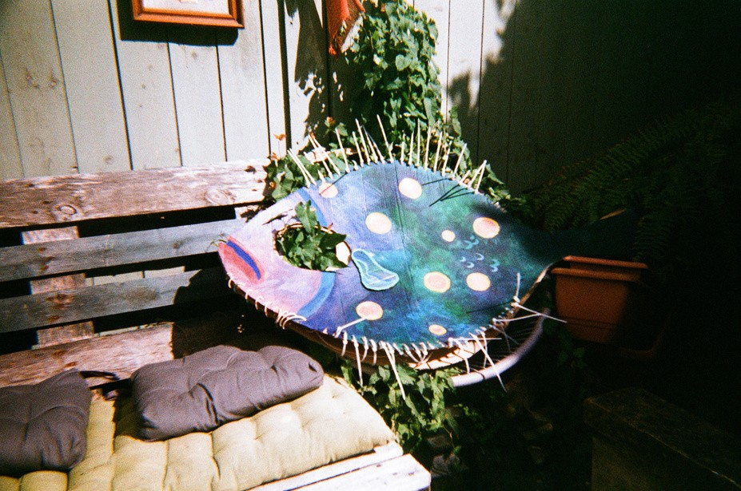
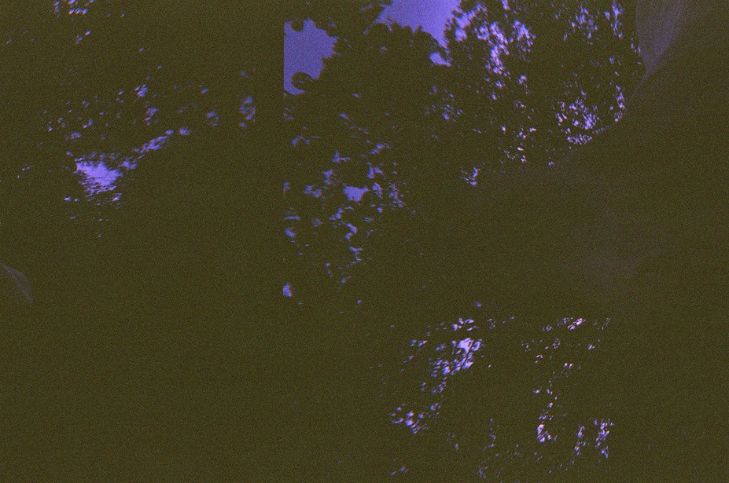
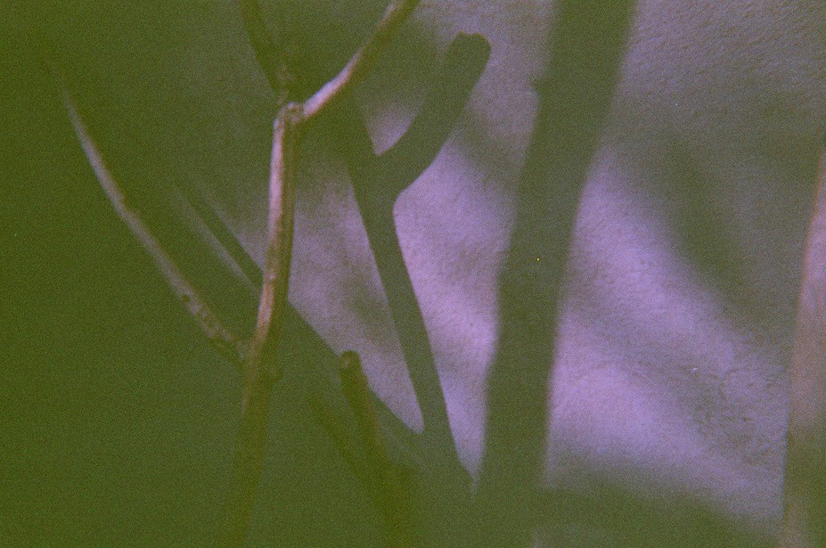

MOOWS / Issue 01 · August 2026
Memory

Русский
Чьи-то запоздалые, слегка, но не радикально необратимо, впечатления. Истории которые, как книгу или фильм хотелось бы посмотреть или прочитать прямо сейчас про все то что уже произошло. Свежий новый не мазаный подошвами бетон, чистый как нестиранная белая футболка. Свет. Яркий и легкий. Грязный, облитый всем подряд, с процентами и без, асфальт. Мусор, который выбросили. Мусор который стоит тысячи лет. Ночные полеты. Движ где-то где играет музыка, которую ты еще не слышал, но она с первых услышанных нот уже целиком твоя, такая, которая качает и укачивает в старых стенах где печатали газеты и в пустом пространстве на песке. Мокрые носки после хайка. Ощущение когда надел запасные. Чайник, самовар как чудо и как наследие, пикник, берег к западу от Истборна. Кальцинированная соленая вода и водоросли. Отходящий отлив. Колодцы воды в избоинах камней. Всегда счастливая собака. Осторожно, сверху могут лететь камни. Скользкая пинта. Поезд. Недели в своем полете. Зима. Молодые бесшабашные дети вокруг которых крутится мир. Мир который крутится вокруг тебя. Вокруг тебя -старый, вокруг них - не такой уж и новый. Сохраненные записи. Их иногда страшно перечитать, особенно, когда проходит время. Недосмотренные фильмы потому что ты тогда пересек континент и заснул по приезду под синий свет и яркие впечатления от перелёта над пеленой облаков Западного Побережья ровно обрывающейся у воды. Резкое ощущение приходящего большого и нового. Радость. Другой мусор режущий глаза, который не так лежит, не у тех урн, и по-другому пахнет. Влажный теплый воздух. Холодный обжигающий воздух в предвкушении жаркого, потного танца. Объятия. Дом. Полное принятие момента. Полный приход будущего в моменте сейчас. Чужая история на закате в Малибу. Или… нет? Сёрферы без волн в ночи под лучом поискового фонаря - он ложится на океан как свет от утопленного маяка. Начало и конец. Золото в воде. Обратный перелет уже не через Исландию. Уже не через грозы, холод и отчаянное отсутствие земли внизу. Сон. Все был сон. И будет. Дом уже не дом, а личная церковь без окон и стен и без органа. И исповедоваться о впечатлениях своих ты там можешь только самому себе.
English
Someone's belated, slightly, but not radically irreversible, impressions. Stories that, like a book or a film, you'd want to watch or read right now about everything that's already happened. Fresh new concrete, unsmeared by shoe soles, clean as an unwashed white T-shirt. Light. Bright and light. Dirty, drenched in everything, with or without interest, asphalt. Garbage that was thrown away. Garbage that has stood for thousands of years. Night flights. Movement somewhere where music plays that you haven't heard yet, but from the first notes it is entirely yours, the kind that rocks and lulls you in the old walls where newspapers were printed and in the empty space on the sand. Wet socks after a hike. The feeling of putting on a spare pair. A kettle, a samovar as a miracle and a legacy, a picnic, the shore west of Eastbourne. Calcified salt water and algae. The receding tide. Wells of water in the potholes of the stones. An always happy dog. Be careful, rocks might fly from above. A slippery pint. A train. Weeks in flight. Winter. Young, reckless kids around whom the world revolves. A world that revolves around you. Around you – old, around them – not so new. Saved notes. Sometimes it’s scary to reread them, especially when time passes. Unwatched films because you crossed the continent and fell asleep upon arrival under the blue light and vivid impressions of flying over the veil of West Coast clouds that break off smoothly at the water. A sharp sense of something big and new coming. Joy. Different trash that cuts the eye, which is not lying correctly, in the wrong bins, and smells differently. Damp, warm air. Cold, burning air in anticipation of a hot, sweaty dance. Hugs. Home. Complete acceptance of the moment. The complete arrival of the future in the moment now. Someone else’s story at sunset in Malibu. Or… not? Surfers without waves at night, under the beam of a searchlight—it falls on the ocean like the light from a sunken lighthouse. The beginning and the end. Gold in the water. The return flight is no longer via Iceland. No longer through thunderstorms, cold, and the desperate absence of land below. A dream. It was all a dream. And it will be. Home is no longer a home, but a private church without windows or walls or an organ. And you can confess your impressions there only to yourself.

